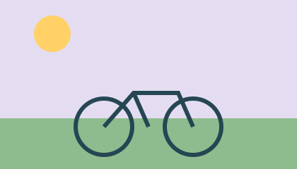
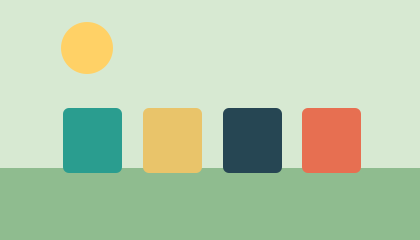
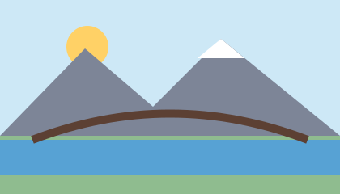
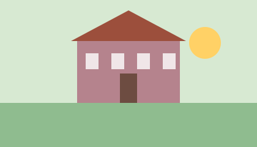

5.10.2026
Nuova velostazione alla stazione
Dal 1° novembre sono disponibili alla stazione 120 posteggi coperti per biciclette.

5.10.2026
Dal 1° novembre sono disponibili alla stazione 120 posteggi coperti per biciclette.

8.10.2026
Da dicembre a febbraio gli scarti vegetali vengono raccolti solo ogni due settimane.

11.10.2026
Dal 3 al 21 novembre è in vigore il senso unico alternato per la posa della nuova pavimentazione.

14.10.2026
Da gennaio la biblioteca sarà aperta anche il sabato dalle 9 alle 12.